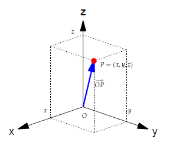
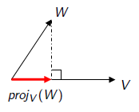

O espaço ℝⁿ
Apostilas
6 de novembro de 2025
O espaço \(\mathbb{R}^n\) — \(\mathbb{R}^2\)
\(\mathbb{R}^2\) = plano cartesiano

\[ \mathbb{R}^2 = \{ (x_1,x_2)\mid x_1,x_2\in\mathbb{R} \}. \]
O espaço \(\mathbb{R}^n\) — \(\mathbb{R}^3\)
\(\mathbb{R}^3\) = espaço tridimensional

\[ \mathbb{R}^3 = \{ (x_1,x_2,x_3)\mid x_1,x_2,x_3\in\mathbb{R} \}. \]
O espaço \(\mathbb{R}^n\) — definição geral
Generalizando, o espaço \(\mathbb{R}^n\) é o conjunto formado por todas as coleções ordenadas \((x_1,x_2,\ldots,x_n)\) de números reais.
\[ \mathbb{R}^n = \{ (x_1,x_2,\ldots,x_n)\mid x_1,x_2,\ldots,x_n\in\mathbb{R} \}. \]
Um elemento \(V=(x_1,x_2,\ldots,x_n)\) de \(\mathbb{R}^n\) é um vetor.
Operações com vetores de \(\mathbb{R}^n\)
Se \(V=(v_1,\ldots,v_n)\) e \(W=(w_1,\ldots,w_n)\) são vetores de \(\mathbb{R}^n\) e se \(\alpha\in\mathbb{R}\), então:
- Soma: \(V+W=(v_1+w_1,\ldots,v_n+w_n)\).
- Multiplicação por escalar: \(\alpha V=(\alpha v_1,\ldots,\alpha v_n)\).
Estas operações satisfazem as propriedades já comentadas para o plano e para o espaço.
Operações com vetores — forma matricial
Representando os vetores de \(\mathbb{R}^n\) como matrizes coluna, as operações viram operações naturais com matrizes:
\[ V=\begin{bmatrix}v_1\\ \vdots \\ v_n\end{bmatrix},\quad W=\begin{bmatrix}w_1\\ \vdots \\ w_n\end{bmatrix}. \]
Soma: \(V+W=\begin{bmatrix} v_1+w_1 \\ \vdots \\ v_n+w_n \end{bmatrix}\).
Multiplicação por escalar: \(\alpha V=\begin{bmatrix} \alpha v_1 \\ \vdots \\ \alpha v_n \end{bmatrix}\).
Combinação linear
Sejam \(V_1,\ldots,V_k\in\mathbb{R}^n\). Uma combinação linear destes vetores é um vetor
\[ V = x_1V_1 + x_2V_2 + \cdots + x_kV_k. \]
Exemplo 1 Se \(V_1=(-1,2,1)\) e \(V_2=(3,-1,2)\) em \(\mathbb{R}^3\) então
\[\begin{aligned} V &= 3V_1 + 5V_2 = 3(-1,2,1) + 5(3,-1,2) = (-3,6,3) + (15,-5,10) = (12,1,13),\\ W &= 2V_1 - 3V_2 = 2(-1,2,1) - 3(3,-1,2) = (-2,4,2) - (9,-3,6) = (-11,7,-4). \end{aligned}\]
Combinação linear — vetores canônicos
Em \(\mathbb{R}^3\) todo vetor \(V=(a,b,c)\) é combinação linear dos vetores canônicos
\[\vec{i}=(1,0,0),\quad \vec{j}=(0,1,0),\quad \vec{k}=(0,0,1).\]
De fato, \(V=(a,b,c)=a\,\vec{i}+b\,\vec{j}+c\,\vec{k}\).
Combinação linear — verificação por sistema linear
Exemplo 2 Verifique se \(V=(-10,-3,1)\) é combinação linear de \(V_1=(1,-3,5)\) e \(V_2=(-4,1,-3)\).
Basta analisar se \(x_1V_1 + x_2V_2 = V\) tem solução:
\[ \begin{aligned} x_1(1,-3,5) + x_2(-4,1,-3) &= (-10,-3,1)\\ (x_1-4x_2,\; -3x_1+x_2,\; 5x_1-3x_2) &= (-10,-3,1) \end{aligned} \]
Sistema equivalente:
\[ \begin{cases} x_1 - 4x_2 = -10,\\ -3x_1 + x_2 = -3,\\ 5x_1 - 3x_2 = 1. \end{cases} \]
Resolvendo, \(x_1=2\) e \(x_2=3\), logo \(V=2V_1+3V_2\).
Combinação linear — forma matricial e proposição
No exemplo anterior, o sistema é
\[ \begin{bmatrix} 1 & -4 \\ -3 & 1 \\ 5 & -3 \end{bmatrix} \begin{bmatrix} x_1 \\ x_2 \end{bmatrix}= \begin{bmatrix} -10 \\ -3 \\ 1 \end{bmatrix}. \]
Observe que as colunas das matrizes são \(V_1\), \(V_2\) e \(V\). Generalizando:
Proposição 1 Um vetor \(V\) é combinação linear de \(V_1,\ldots,V_k\in\mathbb{R}^n\) se o sistema linear \(AX=V\) tem solução, onde \(A\) é a matriz cujas colunas são \(V_1,\ldots,V_k\).
Combinação linear — exemplo de inexistência
Exemplo 3 Verifique se \(V=(0,7,1)\) é combinação linear de \(V_1=(2,1,4)\) e \(V_2=(3,-2,5)\).
Analisar \(xV_1 + yV_2 = V\):
\[ \begin{bmatrix} 2 & 3 \\ 1 & -2 \\ 4 & 5 \end{bmatrix} \begin{bmatrix} x \\ y \end{bmatrix}= \begin{bmatrix} 0 \\ 7 \\ 1 \end{bmatrix} \]
Este sistema não tem solução; logo \(V\) não é combinação linear de \(V_1\) e \(V_2\).
Subespaços
Uma coleção \(X\) de vetores de \(\mathbb R^n\) é dito subespaço de \(\mathbb R^n\) se \(X\) é fechado para soma e múltiplo escalar. Isto é, se para quaisquer \(U_1,U_2\in X\) e qualquer escalar \(a\in\mathbb{R}\), os vetores \[ U_1 + U_2\quad\mbox{e}\quad a U_1 \] também pertencem a \(X\).
Se \(X\) é subespaço de \(\mathbb R^n\), então \(X\) contém o vetor nulo \(\vec{0}\) e é fechado para combinações lineares. Ou seja, se \(U_1,\ldots,U_k\in X\) e \(a_1,\ldots,a_k\in\mathbb{R}\), então \[ a_1 U_1 + a_2 U_2 + \cdots + a_k U_k \in X. \]
Exemplos de subespaços
Exemplo 4
- Uma reta pela origem em \(\mathbb R^2\) ou \(\mathbb R^3\) é um subespaço de \(\mathbb R^2\) ou \(\mathbb R^3\).
- Um plano pela origem em \(\mathbb R^3\) é um subespaço de \(\mathbb R^3\).
- O conjunto \(\{\vec{0}\}\) é um subespaço de \(\mathbb R^n\).
- O conjunto \(\mathbb R^n\) é um subespaço de \(\mathbb R^n\).
- Se \(A\) é matriz \(m\times n\), o conjunto das soluções do sistema homogêneo \(AX=\vec 0\) é um subespaço de \(\mathbb R^n\).
Espaço gerado
Sejam \(V_1,\ldots,V_k\in\mathbb R^n\). O espaço gerado por \(V_1,\ldots,V_k\) é o conjunto de todas as combinações lineares:
\[ [V_1,\ldots,V_k] = \{V=x_1V_1+\cdots+x_kV_k\mid x_1,\ldots,x_k\in\mathbb{R}\}. \]
O conjunto \([V_1,\ldots,V_k]\) é um subespaço de \(\mathbb R^n\).
Observações importantes:
- Como \(\vec{0} = 0V_1+\cdots+0V_k\), a origem sempre pertence a um subespaço de \(\mathbb{R}^n\);
- Se \(V,W\in [V_1,\ldots,V_k]\), então \(V+W\in [V_1,\ldots,V_k]\) (fechado para soma);
- Se \(V\in [V_1,\ldots,V_k]\) and \(a\in \mathbb R\), então \(a V\in [V_1,\ldots,V_k]\) (fechado para múltiplo escalar).
Exemplos
Exemplo 5
- Gerado por um vetor não nulo: os múltiplos deste vetor (uma reta).
- Gerado por dois vetores não paralelos: o plano que contém estes vetores.
Exemplo 6
- Determine a equação do plano \(\alpha\) gerado por \(V_1=(2,-1,1)\) e \(V_2=(3,0,2)\).
- O vetor \(U=(5,-1,3)\) pertence a \(\alpha\)? Qual é o espaço gerado por \(U,V_1,V_2\)?
- O vetor \(W=(3,2,1)\) pertence a \(\alpha\)? Qual é o espaço gerado por \(W,V_1,V_2\)?
Espaço gerado — proposição útil
Proposição 2 Se \(V_0\) é combinação linear de \(V_1,\ldots,V_k\), então \[ [V_0,V_1,\ldots,V_k] = [V_1,\ldots,V_k]. \]
Demonstração-esboço: escreva \(V_0=\alpha_1V_1+\cdots+\alpha_kV_k\) e substitua em \(x_0V_0+x_1V_1+\cdots+x_kV_k\) para ver que qualquer combinação com \(V_0\) pode ser reescrita sem \(V_0\).
Para formar \([V_1,\ldots,V_k]\) podemos descartar qualquer vetor que seja combinação linear dos demais. Isso motiva o conceito de dependência linear:
Definição 1 Um conjunto de vetores é linearmente dependente se algum deles é combinação linear dos demais. No caso contrário, dizemos que os vetores são linearmente independentes.
Dependência linear — questões
- Como saber se um conjunto \(\{V_1,\ldots,V_k\}\) é linearmente dependente? Tentar cada um por vez é viável?
- Se \(\{V_1,\ldots,V_k\}\) é dependente, qual vetor é combinação dos demais? Poderiam todos ser combinações dos outros?
Exercício 1
- Determine a equação do plano \(\alpha\) gerado pelos vetores \(V_1=(2,-1,1)\) e \(V_2=(3,0,2)\).
- O vetor \(U = (1,-2,0)\) pertence a este plano \(\alpha\)? Qual é o espaço gerado por \(U\), \(V_1\) e \(V_2\)? Neste caso o subespaço \([U,V_1,V_2]\) é um plano pela origem.
- O vetor \(W = (3,2,1)\) pertence a este plano \(\alpha\)? Qual é o espaço gerado por \(W\), \(V_1\) e \(V_2\)? Neste caso o subespaço \([W,V_1,V_2]\) é todo o \(\mathbb{R}^3\).
Dependência Linear
Um conjunto de vetores é linearmente dependente se um deles for uma combinação linear dos demais.
Teorema 1 Um conjunto de vetores \(V_1,\ldots,V_k\) é linearmente dependente se e somente se a equação vetorial \[ x_1V_1 + x_2V_2 + \cdots + x_kV_k = \vec{0} \] possui solução não trivial. Isto é, possui solução em que algum \(x_i \neq 0\).
De fato, por exemplo, se \(x_1\neq 0\), na equação \(x_1V_1 + x_2V_2 + \cdots + x_kV_k = \vec{0}\) podemos isolar \(V_1\), escrevendo \(V_1\) como uma combinação linear dos demais vetores: \[ V_1 = -\dfrac{x_2}{x_1}V_2 - \cdots - \dfrac{x_k}{x_1}V_k. \]
Dependência Linear
Exemplo 7 Verifique se os vetores \(V_1=(1,2,5)\), \(V_2=(7,-1,5)\) e \(V_3=(1,-1,-1)\) são LI ou LD.
Resolvendo a equação \(x_1V_1 + x_2V_2 + x_3V_3 = \vec{0}\), obtemos \(2V_1 - V_2 + 5V_3 = \vec{0}\).
Neste caso, qualquer um destes vetores pode ser escrito como uma combinação linear dos outros dois.
Portanto \([V_1,V_2,V_3] = [V_1,V_2] = [V_1,V_3] = [V_2,V_3]\).
Este espaço gerado é um plano pela origem.
Dependência Linear
Verifique se os vetores \(V_1=(3,0,-12)\), \(V_2=(-1,2,1)\) e \(V_3=(-2,0,8)\) são LI ou LD.
Neste exemplo \(2V_1+0V_2+3V_3=\vec{0}\). Portanto
- podemos escrever \(V_1\) como combinação linear de \(V_2\) e \(V_3\).
- e também podemos escrever \(V_3\) como combinação linear de \(V_1\) e \(V_2\).
- mas não podemos escrever \(V_2\) como combinação linear de \(V_1\) e \(V_3\).
Daí \([V_1,V_2,V_3] = [V_2,V_3] = [V_1,V_2]\). Este espaço é um plano.
Observe que \([V_1,V_3]\) é uma reta contida neste plano.
Dependência Linear
Obs: No exemplo anterior vimos que quando um conjunto de vetores é LD então um destes vetores é uma combinação linear dos demais. Entretanto, mesmo o conjunto sendo LD, pode ser que exista um vetor que não seja uma combinação linear dos demais.
Vimos que se \(V_1,V_2,\ldots,V_k\) é um conjunto LD e se, por exemplo, \(V_1\) é uma combinação linear dos demais vetores então
\[[V_1,V_2,\ldots,V_k] = [V_2,\ldots,V_k].\]
Para formar o espaço gerado não precisamos do vetor \(V_1\). Podemos gerar este mesmo espaço com um vetor a menos.
Podemos continuar o processo, agora com os vetores \(V_2,\ldots,V_k\), eliminando vetores que já são combinações lineares dos demais.
Após eliminar todos estes vetores, ficamos com um conjunto de vetores linearmente independete e que gera o mesmo espaço.
Neste momento, obtemos uma base para este subespaço.
Base e Dimensão
Informalmente: Uma base é um conjunto mínimo de geradores para um subespaço.
Definição 2 Seja \(W\) um subespaço de \(\mathbb R^n\). Uma base para \(W\) é um sistema de geradores linearmente independentes para \(W\) (nenhum vetor é combinação linear dos demais vetores).
Lema chave
Lema 1 Seja \(W=[V_1,\ldots,V_k]\) um subespaço de \(\mathbb{R}^n\). Assuma que \(m>k\) e sejam \(U_1,\ldots,U_m\in W\). Então os vetores \(U_1,\ldots,U_m\) são LD.
Comprovação. Como cada \(U_j\in W=[V_1,\ldots,V_k]\), existem coeficientes \(a_{ij}\) tais que \[ U_j=\sum_{i=1}^k a_{ij}V_i,\qquad j=1,\ldots,m. \] Considere a matriz \(A=(a_{ij})\in\mathbb{R}^{k\times m}\). Como \(m>k\), o sistema homogêneo \(A\,x=\vec{0}\) tem solução não trivial. Seja \(x=(x_1,\ldots,x_m)\neq\vec{0}\) tal solução. Então \[ \sum_{j=1}^m x_j U_j =\sum_{j=1}^m x_j\Big(\sum_{i=1}^k a_{ij}V_i\Big) =\sum_{i=1}^k\Big(\sum_{j=1}^m a_{ij}x_j\Big)V_i =\sum_{i=1}^k 0\cdot V_i=\vec{0}. \] Logo, existe uma combinação linear não trivial dos \(U_j\) que dá o vetor nulo, isto é, \(U_1,\ldots,U_m\) são linearmente dependentes.
A dimensão
Consequência: Assuma que \(W=[V_1,\ldots,V_k]=[U_1,\ldots,U_m]\) e que \(V_1,\ldots,V_k\) e \(U_1,\ldots,U_m\) são bases de \(W\). Então \(k=m\).
Definição 3 Se a base tem \(k\) vetores, dizemos que \(W\) é um subespaço de dimensão \(k\): \[ \dim(W)=k. \]
Se \(\{V_1,\ldots,V_k\}\) é uma base para o subespaço \(W\), então \(W\) é o espaço gerado por estes vetores. Mais ainda, não existem “vetores sobrando”. Não podemos descartar nenhum dos vetores da base. \[ W = [V_1,\ldots,V_k]. \]
Base e Dimensão
Exemplo 8
- No plano, \(\{\vec{i},\vec{j}\}\) é uma base de \(\mathbb{R}^2\).
- De modo mais geral, quaisquer vetores não paralelos \(V_1\) e \(V_2\) formam uma base \(\{V_1,V_2\}\) de \(\mathbb{R}^2\).
- No espaço, \(\{\vec{i},\vec{j},\vec{k}\}\) é uma base de \(\mathbb{R}^3\).
- Se \(W\) é uma reta pela origem, e se \(V_1\in W\) é um vetor não nulo, então \(\{V_1\}\) é uma base para \(W\).
- Se \(W\) é um plano pela origem e se \(V_1\) e \(V_2\) são dois vetores não paralelos em \(W\), então \(\{V_1,V_2\}\) é uma base de \(W\).
Base e Dimensão
Exemplo 9
- Se \(V_1\), \(V_2\) e \(V_3\) são vetores não coplanares, então \(\{V_1,V_2,V_3\}\) é uma base de \(\mathbb{R}^3\). Observe que este é o caso se, e somente se, \(\det[V_1,V_2,V_3] \neq 0\).
- Determine uma base para o plano de equação \(2x+y-3x=0\). Em seguida complete esta base até uma base de \(\mathbb{R}^3\).
- Determine uma base e a dimensão do seguinte subespaço de \(\mathbb{R}^3\) \[ W = \{ (a-b,\ b+c,\ 2a-b+c)\in\mathbb{R}^3\mid a,b,c\in\mathbb{R} \}. \]
- O conjunto solução de um sistema linear homogêneo é um subespaço de \(\mathbb{R}^n\). Por exemplo, determine uma base para o conjunto solução de \[ \left\{\begin{array}{rrrrrrrrr} x & + & y & - & 2z & - & w & = & 0 \\ -x & - & y & + & 2z & + & w & = & 0 \\ 2x & + & 2y & - & z & + & w & = & 0 \\ \end{array}\right. \]
Vetores LI e LD: caracterização via determinantes
Então os vetores \(V_1,V_2,\ldots,V_k\) são LD quando o sistema linear \(AX=\overline{0}\) tem solução não trivial, em que as colunas de \(A\) são os vetores \(V_1,V_2,\ldots,V_k\).
Se \(k=n\), ou seja, se temos \(n\) vetores em \(\mathbb{R}^n\), a matriz \(A\) é quadrada. Lembre-se que, neste caso, o sistema homogêneo \(AX=\overline{0}\) tem solução não trivial somente quando \(\det(A) = 0\) (a matriz \(A\) não tem inversa).
Portanto, em \(\mathbb{R}^n\):
- \(V_1,V_2,\ldots,V_n\) são LD \(\Leftrightarrow\) \(\det(A) = 0\).
- \(V_1,V_2,\ldots,V_n\) são LI \(\Leftrightarrow\) \(\det(A) \neq 0\).
Produto escalar em \(\mathbb{R}^n\)
Se \(V=(v_1,v_2,\ldots,v_n)\) e \(W=(w_1,w_2,\ldots,w_n)\) são vetores em \(\mathbb{R}^n\), o produto escalar entre \(V\) e \(W\) é o número real
\[\langle V,W\rangle = v_1w_1 + v_2w_2 + \cdots + v_nw_n.\]
A norma do vetor \(V\) é \(\|V\| = \sqrt{v_1^2 + v_2^2 + \cdots + v_n^2} = \sqrt{\langle V,V\rangle}\).
Observe que isto é uma generalização das definições que já foram dadas e interpretadas para \(\mathbb{R}^2\) e \(\mathbb{R}^3\).
Produto escalar em \(\mathbb{R}^n\) — propriedades
São as mesmas que já foram demonstradas para o \(\mathbb{R}^2\) e \(\mathbb{R}^3\):
- \(\langle V,W\rangle = \langle W,V\rangle\).
- \(\langle U+V,W\rangle = \langle U,W\rangle + \langle V,W\rangle\).
- \(\langle \alpha V,W\rangle = \langle V,\alpha W\rangle = \alpha \langle V,W\rangle\).
- \(\langle V,V\rangle=\|V\|^2\ \geq\ 0\). Mais ainda, \(\|V\|=0 \Leftrightarrow V=\vec{0}\).
- \(|\langle V,W\rangle|\ \leq\ \|V\|\,\|W\|\) (Cauchy–Schwarz).
- \(\|V+W\|\ \leq\ \|V\| + \|W\|\) (Desigualdade triangular).
Cauchy–Schwarz e ângulo
Da desigualdade de Cauchy–Schwarz, para \(V,W\neq\vec{0}\),
\[\frac{|\langle V,W\rangle|}{\|V\|\,\|W\|}\ \leq\ 1 \quad\Rightarrow\quad -1\ \leq\ \frac{\langle V,W\rangle}{\|V\|\,\|W\|}\ \leq\ 1.\]
Existe um único \(\theta\in[0,\pi]\) tal que
\[\cos\theta\ =\ \frac{\langle V,W\rangle}{\|V\|\,\|W\|}.\]
Chamamos \(\theta\) de ângulo entre \(V\) e \(W\), e
\[\langle V,W\rangle = \|V\|\,\|W\|\cos\theta.\]
Vetores ortogonais em \(\mathbb{R}^n\)
Para \(V,W\neq\vec{0}\) em \(\mathbb{R}^n\),
\[\langle V,W\rangle = \|V\|\,\|W\|\cos\theta.\]
Assim, \(\langle V,W\rangle=0\) se, e somente se, \(\theta=90^\circ\).
Portanto,
\[\boxed{\ \langle V,W\rangle=0\ \ \text{caracteriza vetores ortogonais}\ }\]
Projeção ortogonal

O vetor projeção ortogonal é caracterizado por:
- \(\operatorname{proj}_V(W) = \alpha V\) é um múltiplo escalar de \(V\).
- A diferença \(W - \operatorname{proj}_V(W)\) é um vetor ortogonal a \(V\).
Temos \[ \langle W - \operatorname{proj}_V(W),V\rangle=0 \Rightarrow \langle W - \alpha V,V\rangle=0 \Rightarrow \langle W,V\rangle - \alpha\langle V,V\rangle=0, \]
logo
\[ \alpha = \dfrac{\langle W,V\rangle}{\langle V,V\rangle}, \qquad \boxed{\operatorname{proj}_V(W) = \dfrac{\langle W,V\rangle}{\langle V,V\rangle}\, V}. \]
Bases ortogonais e ortonormais
Seja \(\{V_1,\ldots,V_k\}\) uma base para um subespaço de \(\mathbb{R}^n\):
- A base é ortogonal se quaisquer dois vetores da base são ortogonais (\(\langle V_i,V_j\rangle=0\)).
- A base é ortonormal se todos os vetores são unitários e perpendiculares (\(\langle V_i,V_j\rangle=0\) e \(\langle V_i,V_i\rangle=1\)).
Exemplos:
- \(\{\vec{i},\vec{j},\vec{k}\}\) é uma base ortonormal de \(\mathbb{R}^3\).
- \(V_1=(1,3)\) e \(V_2=(-3,1)\) formam uma base ortogonal de \(\mathbb{R}^2\).
- \(V_1=(\cos\theta,\operatorname{sen}\,\theta)\) e \(V_2=(-\operatorname{sen}\,\theta,\cos\theta)\) formam uma base ortonormal de \(\mathbb{R}^2\).
Aplicação: coordenadas em base ortogonal
Se \(\{V_1,\ldots,V_k\}\) é uma base ortogonal para um subespaço de \(\mathbb{R}^n\) e se \(V=x_1V_1+\cdots+x_kV_k\), então
\[\langle V,V_j\rangle = x_j\langle V_j,V_j\rangle \quad\Rightarrow\quad \boxed{\ x_j = \dfrac{\langle V,V_j\rangle}{\langle V_j,V_j\rangle},\ j=1,\ldots,k\ }\]
Bases ortogonais e ortonormais — exercícios
Exercício 2
Considere a base ortogonal de \(\mathbb{R}^2\) formada por \(V_1=(3,1)\) e \(V_2=(-1,3)\). Se \(V=(5,4)\) determine \(x_1\) e \(x_2\) tais que \(V = x_1V_1 + x_2V_2\).
Considere a base ortonormal de \(\mathbb{R}^2\) formada por \(V_1=(\tfrac{4}{5},\tfrac{3}{5})\) e \(V_2=(-\tfrac{3}{5},\tfrac{4}{5})\). Se \(V=(5,4)\) determine \(x_1\) e \(x_2\) tais que \(V = x_1V_1 + x_2V_2\).
Considere o subespaço \(W\) de \(\mathbb{R}^3\) que é o plano de equação \(2x+y-3z=0\).
- Determine uma base de \(W\).
- Determine uma base ortogonal \(\{V_1,V_2\}\) de \(W\).
- Determine uma base ortonormal \(\{U_1,U_2\}\) de \(W\).
- Se \(V=(5,2,4)\), calcule \(x_1\) e \(x_2\) tais que \(V=x_1V_1+x_2V_2\).
- Se \(V=(5,2,4)\), calcule \(c_1\) e \(c_2\) tais que \(V=c_1U_1+c_2U_2\).
Bases ortogonais e ortonormais — exercícios
Exercício 3
Considere o plano \(\alpha\) de \(\mathbb{R}^3\) de equação \(x-2y+z=0\).
- Determine uma base ortogonal \(\{V_1, V_2, V_3\}\) de \(\mathbb{R}^3\) tal que \(\{V_1,V_2\}\) é uma base ortogonal do plano \(\alpha\).
- Escreva o vetor \(V=(10,1,4)\) como uma combinação linear dos vetores da base do item (a): encontre \(x,y,z\) tais que \(xV_1+yV_2+zV_3=V\).
Sejam \(V_1=(1,3,-2,5)\) e \(V_2=(1,2,1,3)\) vetores de \(\mathbb{R}^4\). Seja \(W\) o conjunto dos vetores de \(\mathbb{R}^4\) que são ortogonais a \(V_1\) e a \(V_2\).
- Determine uma base de \(W\).
- Determine uma base ortogonal \(\{W_1,W_2\}\) de \(W\).
- Se \(V=(-9,-4,2,5)\), mostre que \(V\in W\) e calcule \(x_1\) e \(x_2\) tais que \(V=x_1V_1+x_2V_2\).